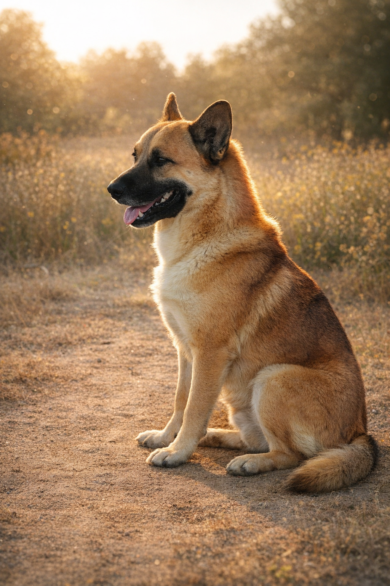

Rocky
"The Stone Who Would Not Move"
Anchor"The LORD is my rock and my fortress and my deliverer." — Psalm 18:2
Active Guardian"O LORD, You preserve man and beast." — Psalm 36:6 (NKJV)
Browse photos of the Line of Pearl bloodline. Click any image to view full-size with download options. Each guardian carries a spirit name and covering verse — a reminder that this is covenant, not commerce.
"The Stone Who Would Not Move"
Anchor"The LORD is my rock and my fortress and my deliverer." — Psalm 18:2
Active Guardian"First Matriarch"
Refuge"He shall cover you with His feathers, and under His wings you shall take refuge." — Psalm 91:4
Active Guardian"Refined at the Gate"
Bridge"Who can find a virtuous wife? For her worth is far above rubies." — Proverbs 31:10
Active GuardianChildren of Pearl, grandchildren of Rocky. Born December 2025.
"Still Flame"
Watcher"He makes me to lie down in green pastures." — Psalm 23:2
With Lewis"Still Wind"
Scout"In quietness and confidence shall be your strength." — Isaiah 30:15
With Lewis
"Still Light"
Healer"Your word is a lamp to my feet and a light to my path." — Psalm 119:105
With Lewis